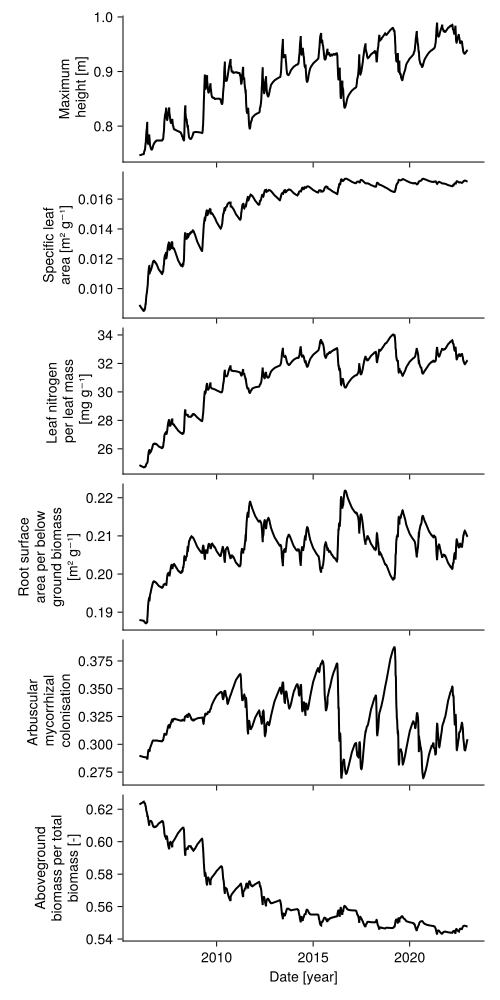
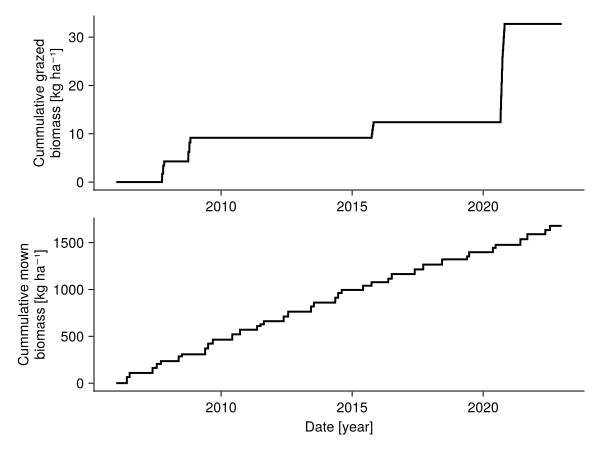
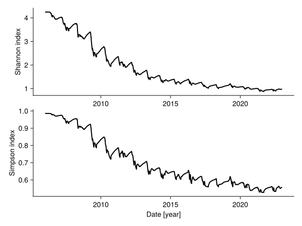

How to analyse the model output
I assume that you have read the tutorial on how to prepare the input data and run a simulation (see here). In this tutorial, we will analyse the output of the simulation that is stored in the object sol.
import GrasslandTraitSim as sim
using Statistics
using CairoMakie
using Unitful
input_obj = sim.validation_input(;
plotID = "HEG01", nspecies = 25,
trait_seed = 99);
p = sim.SimulationParameter();
sol = sim.solve_prob(; input_obj, p);Biomass
We can look at the simulated biomass:
sol.output.biomass5844×1×1×25 DimArray{Unitful.Quantity{Float64, ùêå ùêã^-2, Unitful.FreeUnits{(ha^-1, kg), ùêå ùêã^-2, nothing}},4} state_biomass with dimensions:
Dim{:time} Sampled{Dates.Date} Dates.Date("2006-01-01"):Dates.Day(1):Dates.Date("2021-12-31") ForwardOrdered Regular Points,
Dim{:x} Sampled{Int64} 1:1 ForwardOrdered Regular Points,
Dim{:y} Sampled{Int64} 1:1 ForwardOrdered Regular Points,
Dim{:species} Sampled{Int64} 1:25 ForwardOrdered Regular Points
[:, :, 1, 1]
1
2006-01-01 60.0 kg ha^-1
2006-01-02 58.9388 kg ha^-1
2006-01-03 57.8964 kg ha^-1
⋮
2021-12-28 0.0 kg ha^-1
2021-12-29 0.0 kg ha^-1
2021-12-30 0.0 kg ha^-1
2021-12-31 0.0 kg ha^-1
[and 24 more slices...]The four dimension of the array are: daily time step, patch x dim, patch y dim, and species. For plotting the values with Makie.jl, we have to remove the units with ustrip:
# if we have more than one patch per site, we have to first calculate the mean biomass per site
species_biomass = dropdims(mean(sol.output.biomass; dims = (:x, :y)); dims = (:x, :y))
total_biomass = vec(sum(species_biomass; dims = :species))
fig, _ = lines(sol.simp.output_date_num, ustrip.(total_biomass), color = :darkgreen, linewidth = 2;
axis = (; ylabel = "Aboveground dry biomass [kg ha⁻¹]",
xlabel = "Date [year]"))
fig
Share of each species
We can look at the share of each species over time:
# colors are assigned according to the specific leaf area (SLA)
color = ustrip.(sol.traits.sla)
colormap = :viridis
colorrange = (minimum(color), maximum(color))
is = sortperm(color)
cmap = cgrad(colormap)
colors = [cmap[(co .- colorrange[1]) ./ (colorrange[2] - colorrange[1])]
for co in color[is]]
# calculate biomass proportion of each species
biomass_site = dropdims(mean(sol.output.biomass; dims=(:x, :y)); dims = (:x, :y))
biomass_ordered = biomass_site[:, sortperm(color)]
biomass_fraction = biomass_ordered ./ sum(biomass_ordered; dims = :species)
biomass_cumfraction = cumsum(biomass_fraction; dims = 2)
begin
fig = Figure()
Axis(fig[1,1]; ylabel = "Relative proportion of biomass of the species",
xlabel = "Date [year]",
limits = (sol.simp.output_date_num[1], sol.simp.output_date_num[end], 0, 1))
for i in 1:sol.simp.nspecies
ylower = nothing
if i == 1
ylower = zeros(size(biomass_cumfraction, 1))
else
ylower = biomass_cumfraction[:, i-1]
end
yupper = biomass_cumfraction[:, i]
band!(sol.simp.output_date_num, vec(ylower), vec(yupper);
color = colors[i])
end
Colorbar(fig[1,2]; limits = colorrange, colormap = cmap,
label = "Specific leaf area [m² g⁻¹]")
fig
end
Soil water content
Similarly, we plot the soil water content over time:
# if we have more than one patch per site,
# we have to first calculate the mean soil water content per site
soil_water_per_site = dropdims(mean(sol.output.water; dims = (:x, :y)); dims = (:x, :y))
fig, _ = lines(sol.simp.output_date_num, ustrip.(soil_water_per_site), color = :blue, linewidth = 2;
axis = (; ylabel = "Soil water content [mm]", xlabel = "Date [year]"))
fig
Community weighted mean traits
We can calculate for all traits the community weighted mean over time:
relative_biomass = species_biomass ./ total_biomass
traits = [:height, :sla, :lnc, :rsa, :amc, :abp, :lbp]
trait_names = [
"Potential\n height [m]", "Specific leaf\narea [m² g⁻¹]", "Leaf nitrogen \nper leaf mass\n [mg g⁻¹]",
"Root surface\narea per above\nground biomass\n[m² g⁻¹]", "Arbuscular\n mycorrhizal\n colonisation",
"Aboveground\nbiomass per total\nbiomass [-]", "Leaf biomass\nper total \nbiomass [-]"]
begin
fig = Figure(; size = (500, 1000))
for i in eachindex(traits)
trait_vals = sol.traits[traits[i]]
weighted_trait = trait_vals .* relative_biomass'
cwm_trait = vec(sum(weighted_trait; dims = 1))
Axis(fig[i, 1];
xlabel = i == length(traits) ? "Date [year]" : "",
xticklabelsvisible = i == length(traits) ? true : false,
ylabel = trait_names[i])
lines!(sol.simp.output_date_num, ustrip.(cwm_trait);
color = :black, linewidth = 2)
end
[rowgap!(fig.layout, i, 5) for i in 1:length(traits)-1]
fig
end
Grazed and mown biomass
We can look at the grazed and mown biomass over time:
# total
sum(sol.output.mown)
sum(sol.output.grazed)
# plot the grazed and mown biomass over time
grazed_site = dropdims(mean(sol.output.grazed; dims=(:x, :y, :species)); dims=(:x, :y, :species))
cum_grazed = cumsum(grazed_site)
mown_site = dropdims(mean(sol.output.mown; dims=(:x, :y, :species)); dims=(:x, :y, :species))
cum_mown = cumsum(mown_site)
begin
fig = Figure()
Axis(fig[1,1]; ylabel = "Cummulative grazed\nbiomass [kg ha⁻¹]")
lines!(sol.simp.mean_input_date_num, ustrip.(vec(cum_grazed)), color = :black, linewidth = 2;)
Axis(fig[2,1]; ylabel = "Cummulative mown\nbiomass [kg ha⁻¹]", xlabel = "Date [year]")
lines!(sol.simp.mean_input_date_num, ustrip.(vec(cum_mown)), color = :black, linewidth = 2;)
fig
end
Shannon and Simpson diversity
We can calculate the Shannon and Simpson diversity over time:
biomass_site = dropdims(mean(sol.output.biomass; dims = (:x, :y)); dims = (:x, :y))
tend = size(biomass_site, 1)
shannon = Array{Float64}(undef, tend)
simpson = Array{Float64}(undef, tend)
for t in 1:tend
b1 = biomass_site[t, :]
b1 = b1[.!iszero.(b1)]
p1 = b1 ./ sum(b1)
shannon[t] = -sum(p1 .* log.(p1))
simpson[t] = sum(p1 .^ 2)
end
begin
fig = Figure()
Axis(fig[1,1]; ylabel = "Shannon index")
lines!(sol.simp.output_date_num, shannon, color = :black, linewidth = 2;)
Axis(fig[2,1]; ylabel = "Simpson index", xlabel = "Date [year]")
lines!(sol.simp.output_date_num, simpson, color = :black, linewidth = 2;)
fig
end